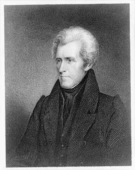

Party colors follow the site's ideology adjustment: before 1897, Democrats were generally the more conservative party, so they are shown in red and Republicans in blue.
The hero of the Battle of New Orleans and the first president from west of the Appalachians. He signed the Indian Removal Act, which led to the forced removal of the Southeastern tribes, vetoed the renewal of the Second Bank of the United States and pulled federal money out of it, faced down South Carolina's attempt to nullify federal tariffs, and paid off the entire national debt in 1835, the only time that has happened. His policies helped set off the Panic of 1837.
Shaded areas show the years in office, with a few years before and after for comparison. Until 1842 the federal budget year matched the calendar year and debt figures are dated January 1; from 1843 to 1976 budget years ran July to June.
January 1, 1829: $58.42 million → January 1, 1837: $336,958
The debt hit about $34,000 in January 1835, essentially zero, and was gone by 1836. Until 1842 the Treasury's debt figures are dated January 1, so these are the closest readings to the start and end of the term.
Debt as a share of GDP. Above 100% means the debt is bigger than a year of everything the country produces.
Money borrowed each budget year (below the line) or paid down (above). The White House budget office's yearly figures begin in 1901.
No national estimates before 1890. Economist Stanley Lebergott's yearly estimates, the earliest national series, begin in 1890
How much prices rose each year (consumer price index).
What everyday prices and paychecks did while in office.
Prices use the consumer price index (MeasuringWorth). The minimum wage is the federal rate set by Congress.
12 orders. Count from the American Presidency Project.
Yearly counts aren't reliable for this era. Orders were not numbered until 1907, when the State Department numbered the ones already in its files, and many orders were never numbered at all, so only the total is shown.
Source: American Presidency Project: executive orders (full list of every order).
Most orders in this era were routine, such as setting aside public land or exempting jobs from civil service rules.
A pardon wipes out the punishment for a federal crime; a commutation shortens a sentence but leaves the conviction. The Justice Department's published counts begin in 1900.
The Justice Department's published clemency counts begin in fiscal 1900, so there are no reliable yearly totals for this presidency.
Source: U.S. Dept. of Justice, clemency statistics, which lists every recipient with the crime and sentence.
The crime: Robbing the U.S. mail
Sentence: Death
Why it drew attention: Jackson pardoned the death sentence but Wilson refused to accept it. The Supreme Court ruled in 1833 that a pardon has no effect unless accepted.
SourceThe same checklist for every president. Tap a row for details and sources.
In 1834 the Senate censured him for removing federal deposits from the national bank, the only time it has censured a president. His allies had the censure expunged in 1837.
SourceNever charged.
No member of his cabinet or White House staff was convicted.
None were appointed.
In 1835 his postmaster general let Southern postmasters refuse to deliver antislavery mail, and Jackson asked Congress for a law banning it. Congress refused.
SourceWhat happened, what was proven, and how it ended.
Jackson pushed through the Indian Removal Act and pressed the Choctaw, Creek, Chickasaw, Cherokee and Seminole to give up their lands in the Southeast. He did not enforce the Supreme Court's 1832 ruling that Georgia had no authority over Cherokee land.
Outcome: Tens of thousands were forced west; thousands died, including about 4,000 Cherokee on the Trail of Tears under Van Buren.
SourceJackson traded in enslaved people early in his career and owned about 150 at The Hermitage by the end of his life.
Outcome: He never freed them.
SourceJackson vetoed the bank's recharter and moved federal money into state banks, firing a treasury secretary who refused to do it.
Outcome: The Senate censured him in 1834; the censure was expunged in 1837. The easy credit that followed fed the Panic of 1837.
SourceBefore his presidency, Jackson shot and killed Charles Dickinson in a duel after a dispute over a horse race bet.
Outcome: He was never charged.
SourceWidely quoted remarks, with the context they were said in.
It is to be regretted that the rich and powerful too often bend the acts of government to their selfish purposes.
Our Federal Union: It must be preserved.
What good man would prefer a country covered with forests and ranged by a few thousand savages to our extensive Republic?